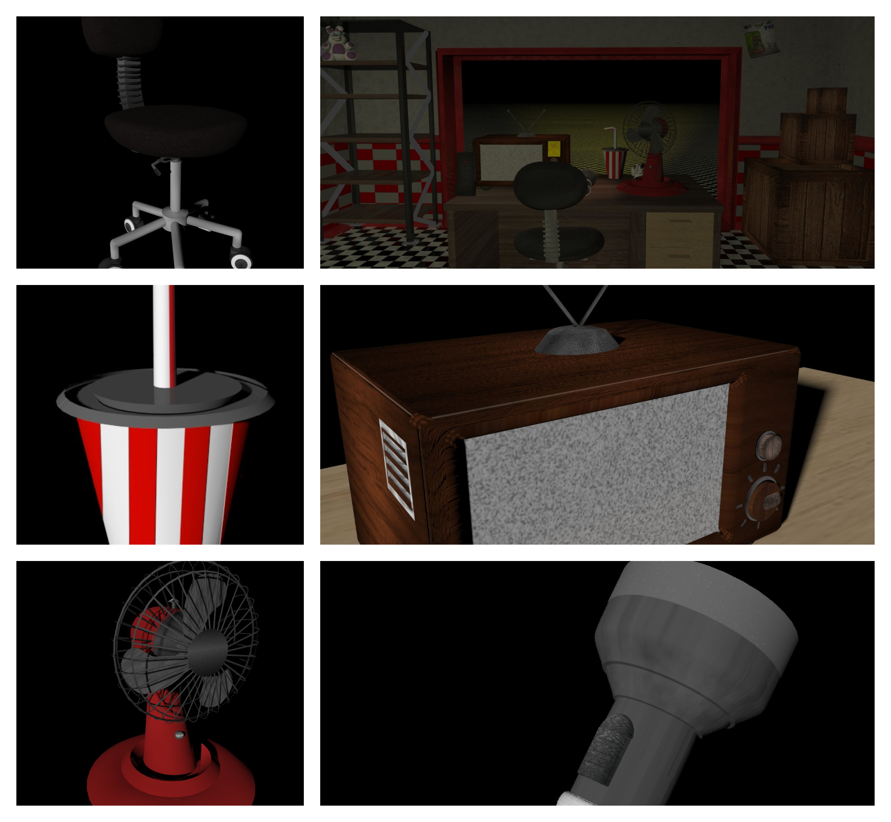

| JuanJoseD | 1 | 2 | 3 | 4 | 5 | 6 |
|---|---|---|---|---|---|---|
| Hobbies | ediccion de video | ediccion de imagenes | Video juegos | Desarrollo de juegos indie :3 | La Lectura | Desarrollo de software |
| Gustos | el frontend | La saga de Pokemon (Gen favorita: 5) | El rock y el Metal | Los videojuegos (sobre todo terror y accion) | El mantenimiento de computadoras | libros de ciencia ficcion e historia |
| Skill | Modelado 3D desde cero con cinema4D (a punto de pasarme a blender) | Maquetacion nativa (html y css) | Unity | Desarrollo de apks con clickteam | Python | Desarrollo de pixel arts |
| Skills curiosos | llegue aqui sin saber javascript :3 | he trabajado en un juego de terror que termino cancelado :c | trabajo arreglando computadoras (llamenme necesito comer :c) | AR 43 en Geshin impact (aqui se van mis horas de sueño) | tengo un gran vicio a los juegos rpg y juegos pixel art | Me encanta el pixel art, al punto que mi ultimo juego "The Resurge of the Earth" es hecho con arte y tematica pixel |
"pasa el mouse en la imagen" 